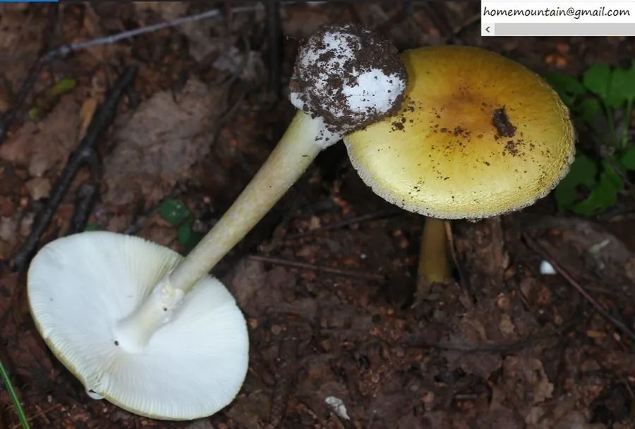

真菌 · 真菌界
黄盖鹅膏 Amanita subjunquillea

菌盖鲜黄色、形似可食蘑菇的剧毒鹅膏，含鹅膏毒肽，误食可致肝肾衰竭甚至死亡，是中国常见毒菌之一。
- 分类
- 门担子菌门纲伞菌纲目伞菌目科鹅膏科属鹅膏属
- 栖息环境
- 针叶林和阔叶林的地面，与松树、栎树形成外生菌根
- 地理分布
- 中国、日本和朝鲜半岛，中国多个省区林区有分布
- 保护级别
- 暂无评估（IUCN 未评估，有毒物种）
物种志
黄盖鹅膏是担子菌门伞菌目的剧毒真菌，子实体单生或群生。菌盖呈半球形至平展，直径 5–10 cm，表面鲜黄色至柠檬黄色，光滑；菌褶白色，离生；菌柄白色至淡黄色，基部膨大并有白色菌托，菌环白色膜质；孢子印白色。它通体黄白相间，外观并不狰狞，却十分危险。
黄盖鹅膏与松树、栎树等树木形成外生菌根，多生于针叶林和阔叶林的地面，夏秋季出菇，在中国、日本和朝鲜半岛有分布。它含有鹅膏毒肽，会破坏肝细胞，误食后潜伏期长，随后出现肝肾衰竭，严重时可致死。黄盖鹅膏与一些可食的黄色蘑菇外形相似，极易误采，是没有经验者最容易误食的剧毒菌之一。预防的关键是不采摘、不食用任何不认识的野生菌。
形态与习性
- 菌盖直径 5–10 cm，鲜黄色至柠檬黄色
- 菌褶白色，离生
- 菌柄白色至淡黄色，基部有白色菌托
- 菌环白色膜质
- 毒性含鹅膏毒肽，可致肝肾衰竭甚至死亡
- 辨识与可食黄色蘑菇相似，严禁采食
趣味知识
- 黄盖鹅膏通体鲜黄，外观并不狰狞，却含有致命的鹅膏毒肽。
- 误食后潜伏期长，随后可能出现急性肝肾衰竭。
- 它与中国常见的多种可食野生菌外形相似，极易误采。